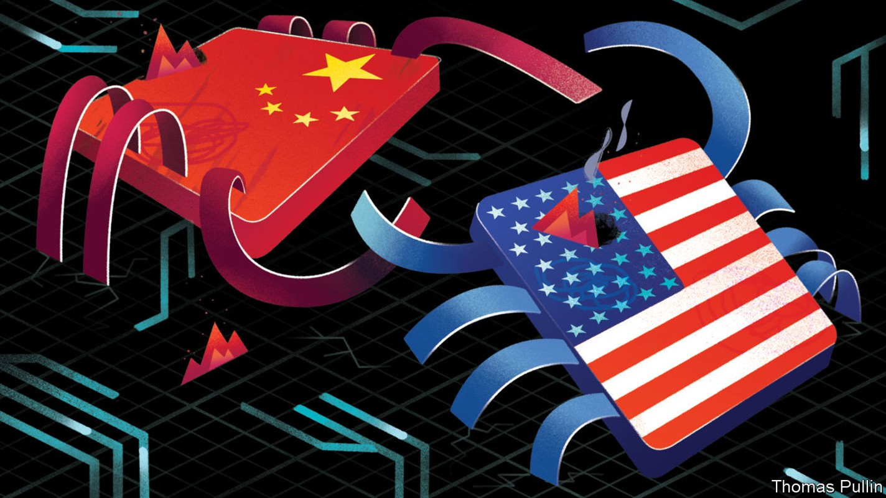
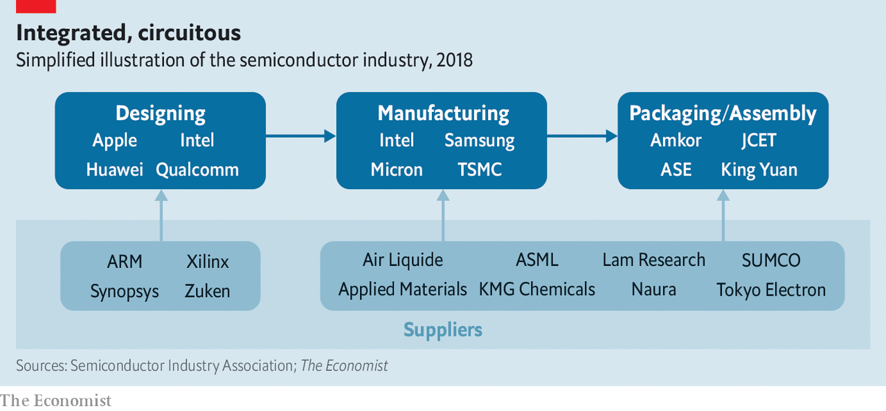
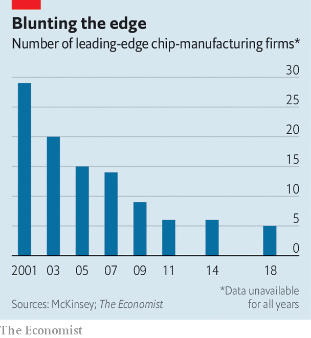

The semiconductor industry and the power of globalisation
Superpower politics may start to unravel it

SILICON VALLEY, the heartland of America’s technology industry, takes its name from the chemical element that is the most important ingredient in microchips. Most of the attention it now attracts is directed at companies such as Facebook, Google and Apple, which are better known for their software and nifty devices rather than the chips that make them work. But it was in the Valley in the 1950s and 1960s where inventions like the transistor and the integrated circuit were refined, helping to transform computers from unreliable machines the size of a room into dependable devices that fit neatly into pockets. That in turn enabled the technology titans of today to prosper.
Listen to this story.Enjoy more audio and podcasts on iOS or Android.
Listen to this story
Save time by listening to our audio articles as you multitask
Modern microchips are now embedded into everything from cars and washing machines to fighter planes. World Semiconductor Trade Statistics, a data provider, reckons that the market for chips was worth $412bn in 2017, a rise of 21.6% on the year before. If anything, these raw numbers understate the importance of chipmaking. The global e-commerce industry, for instance, is reckoned to have revenues of over $2trn a year. If data are the new oil, chips are the internal-combustion engines that turn them into something useful.
The ubiquity of chips has led to the growth of a vast global industry. Modern microchips have billions of components and are made in ultra-advanced factories that cost tens of billions of dollars to build. Indeed, that such devices can be built at all is a testament to the power of specialisation and trade.
These hugely complicated products have spawned an equally complex supply chain involving thousands of specialised companies all around the world. The Semiconductor Industry Association, an American trade body, reckons that one of its members has more than 16,000 suppliers, of which more than 8,500 are outside the United States. The raw materials and the parts that are the components of a chip cross and recross the world before eventually ending up as the brains of a smartphone, a car’s anti-lock braking system or thousands of other products besides.
Two forces are now thrusting the semiconductor industry firmly into the spotlight. The first is geopolitics. Chips are caught up in an increasingly bad-tempered rivalry between America, the incumbent techno-superpower, and China, the aspiring one. The second is physics. This brewing technological struggle comes at a historic moment. For 50 years progress has been driven by Moore’s law, which states that the number of components that can be crammed onto a chip doubles every two years and thus, roughly, so does its computational power. But the law is breaking down, leaving the future of the industry looking messier and less certain than at any time in the past.
Electronic politics
Start with geopolitics. America has long seen its lead in chipmaking as a vital strategic asset. One of the earliest uses for the chips coming out of Silicon Valley, which owes its existence to the patronage of the Pentagon as much as it does to venture capitalists, was in guidance systems for nuclear missiles. A White House report published in 2017 does not mince its words: “Cutting-edge semiconductor technology is…critical to defence systems and US military strength.”
China also sees chips as crucial to its future. In 2014 it established the National Integrated Circuit Industry Investment Fund, to channel cash to research and development in the semiconductor industry. One of the targets of “Made in China 2025”, a national programme designed to boost high-tech industries, is to increase domestic production. China wants the revenues of its home-grown chip industry to grow from $65bn in 2016 to $305bn by 2030, and for most of its demand for chips to be supplied domestically (today only around a third is).
America has not welcomed China’s incursion onto its patch. It has reacted by trying to slow its rival’s progress. In 2015, for instance, it banned the sale of high-end chips made by Intel, the world’s second-biggest semiconductor firm, to Chinese labs that design supercomputers. It has thwarted acquisitions of American companies by Chinese firms.
This year the Trump administration briefly banned American firms from selling components to ZTE, a Chinese maker of smartphones and telecoms equipment, after it breached the terms of a settlement to do with illegally exporting technology to Iran. ZTE has revenues of $16bn and sells its products all over the world. But the Chinese company licenses its chip designs from several American firms and, when that supply was cut off, it was paralysed overnight. Bankruptcy was only averted when Donald Trump, America’s president, unexpectedly agreed to lift the ban.
Chips in the windscreen
America has also levelled allegations of industrial espionage at China. On November 1st prosecutors indicted Fujian Jinhua Integrated Circuit, a Chinese chipmaker, and United Microelectronics Corporation, its Taiwanese partner, accusing them of stealing trade secrets from Micron, a big American firm. Officials have kept up a drumbeat of warnings about the risks of using equipment made in China, for fear that it may be funnelling sensitive information homeward. On October 12th two senators publicly warned Canada not to let Huawei, a big Chinese electronics firm, become involved in plans to build speedy 5G mobile-phone networks in the country. This week, New Zealand blocked a mobile-network operator, Spark, from using Huawei’s equipment in its forthcoming 5G network. And chips are a front in Mr Trump’s tariff-led trade war with China. They are among a range of goods on which America raised duties in August.
China has toughened up in retaliation. A planned takeover by Qualcomm, an American firm that designs chips, of NXP, a Dutch one, was abandoned in 2018 after heel-dragging by competition regulators in Beijing. Chinese authorities are also investigating price-fixing among American and South Korean manufacturers of memory chips, including Micron.
America’s efforts to frustrate China may only serve to make it more determined. Until recently China boasted the world’s fastest supercomputer. Named “TaihuLight”, and based at the National Supercomputing Centre in Wuxi, near Shanghai, its 40,960 ShenWei 26010 chips are of an entirely Chinese design, says Jack Dongarra, a supercomputing specialist at the University of Tennessee. The main result of the Intel ban, he says, is “that China has put even more money into high-performance computing research”. Successor machines to the TaihuLight, using more advanced chips, are in the works.
A trade war and the growing sense of an unfriendly rivalry between America and China is having unwelcome repercussions on one of the world’s most complex and globalised industries. “These [chip] companies have been told that globalisation is great for the past 30 years,” says Paul Triolo of the Eurasia Group, a political-risk consultancy. “And now all of a sudden this has become a national-security problem, and they have to try to adjust to that.”
Refashioning an industry that is vast, fast-growing and vital to the global economy will not be easy. In the early days chipmakers handled every part of the process in-house. That began to change in 1961 when Fairchild Semiconductor began assembling and testing products in Hong Kong, where skilled labour was cheap. That trend has accelerated as chips have become more complicated and more of the manufacturing process has been outsourced to specialised firms. The result is a confusing constellation of thousands of companies. These can be lumped into three rough categories (see diagram)—design, manufacture, and assembly and packaging.
A typical journey from raw silicon to completed chip gives an indication of how elaborate supply chains can be. It may start in the Appalachian mountains, where deposits of silicon dioxide are of the highest quality. The sand may then be shipped to Japan to be turned into pure ingots of silicon. These are then sliced into standard-sized wafers, 300mm across, and sent to a chip factory, or “fab”, perhaps in Taiwan or South Korea. Here the slices will be imprinted with a particular pattern using photolithography equipment made in the Netherlands.

That pattern will be determined by the overall design of the chip. This design might come from ARM, a company based in Britain. But it can be tweaked for specific applications by one of the company’s many licensees. Once finished, it must be assembled into a package, in which the etched silicon is placed inside the familiar ceramic or plastic containers that are dotted across any circuit board, and then comes testing. That might take place in China, Vietnam or the Philippines.
Slices both ways
This is then integrated into a circuit board, which could happen somewhere else again. The result will be one of the many components that arrive at factories from Mexico to Germany to China, for assembly into an industrial robot, smart electricity meter or one of the millions of computers that crunch data in the cloud.
China’s domestic industry started at the lower-value end of this process, says Jiang Xu, a professor of electrical engineering at the Hong Kong University of Science and Technology. Its strength still lies in assembly and packaging chips. Dozens of firms around the Yangzi delta near Shanghai, for instance, specialise in this sort of work. Their names may be unfamiliar—JCET, Tianshui Huatian and TFME—but their revenues are counted in billions of dollars.
Now, with Western firms reliant on it for this work, and fuelled by a fast-growing home market, China is turning to design and manufacturing. It has already made inroads at the lower end of the market. Firms such as Samsung, Intel, Apple and Taiwan Semiconductor Manufacturing Company (TSMC) design or make powerful, expensive chips for smartphones or cloud computing. But “between 75% and 80% of semiconductors are not bleeding-edge products,” says Len Jelinek of IHS Markit, a research firm. Chips that go into LCD televisions, home routers and smart devices that make up the internet of things, which adds sensors and internet connections to everyday objects, “can absolutely be manufactured by firms in China”.

Chinese firms are beginning to succeed further up the value chain, too. HiSilicon (owned by Huawei) and Tsinghua Unigroup, a state-owned firm, are rated among the world’s top ten chip-design firms by revenue. HiSilicon’s “Kirin” series of smartphone chips is on a par with anything Western companies can design.
No Moore
Through these efforts China has reduced dependence on foreign expertise, but not yet eliminated it. Mr Xu points out that Chinese firms still rely heavily on modifying designs from ARM. Its chips already dominate the mobile-computing business and are poised to do the same with the array of smart devices that will make up the internet of things. The firm is also trying to break into the market for high-powered cloud-computing chips. Yet ARM is based in Britain, and was recently bought by SoftBank, a big Japanese firm. Both are close allies of America.
China has found it harder to make progress in cutting-edge manufacturing, which is the most demanding part of chipmaking. Chinese upstarts must compete with incumbents that have intimidating technological leads and engineers with decades of hard-won know-how. “The semiconductor [manufacturing] industry is really about repetitive cycles of learning,” says Mr Jelinek. The Kirin 980 was the first smartphone chip to be produced on the 7-nanometre node—the current state of the art for squeezing in computing power. Since no fab in China has the required technology, HiSilicon—like Apple and Qualcomm, its American competitors—had to have its chips made in Taiwan, by TSMC.
The demise of Moore’s law could offer a means to restrict China’s ambitions. It has always been clear that it cannot go on indefinitely. Each time components in a chip shrink, manufacturing gets fiddlier and more expensive. Leading-edge fabs have become eye-wateringly pricey. Samsung is spending $14bn to build one near Pyeongtaek, in South Korea. Chipmakers jokingly refer to Moore’s second law, which says that the cost of a chip factory doubles every four years.
The result has been consolidation at the forefront of chipmaking. In 2001 there were 29 companies offering the most advanced fab facilities, according to McKinsey, a consulting firm (see chart). Today there are five. That could make it easier for Western techno-hawks to slow China’s progress. These fabs are owned by companies based in America, or in Taiwan and South Korea, both of which are its allies. Another lever might be the firms that supply equipment to those fabs. One in particular—ASML, a Dutch firm—has, after over a decade of trying, finally commercialised “extreme ultra-violet lithography”, a manufacturing process needed for the most advanced chips. That could offer Western policymakers a pinch-point.
But the end of Moore’s law offers China hope, too. One of its side-effects used to be that, as components shrank, chips were able to operate faster. But that effect—called Dennard scaling—broke down in the mid-2000s, which meant that shrinking a chip’s components offered fewer benefits than it used to. For that reason, says Linley Gwennap, a chip-industry analyst, being a pace or two behind the leaders in manufacturing matters a bit less than before.
At the same time, says Andrew Huang, a hardware designer, the slowing of Moore’s law has left the industry as a whole casting about for other ways to build better chips. Attention is gradually shifting, in other words, from refining manufacturing towards cleverer design and new ideas. If that changes the way the chip industry operates, Chinese firms could try to move into this new, relatively unclaimed territory.
HiSilicon’s chips offer an example. They include super-specialised silicon designed to speed up calculations that are useful for artificial intelligence, another focus of “Made in China” and an area into which the country is ploughing cash. Quantum computing is another promising avenue. It uses the effects of quantum mechanics to speed up enormously some sorts of calculations. China has made big bets on quantum computing, reportedly spending $10bn to build a big research lab in Hefei, the capital of Anhui province. But it will require the mastery of unconventional physics such as superconducting wires and ion traps, technologies that are very different from what chipmakers use today.
As China advances at the boundaries of chipmaking, America is trying to push them further out of reach. American firms, including Google, Microsoft and IBM, have quantum-computing projects of their own. A report in 2017 from the President’s Council of Advisors on Science and Technology advised that America’s best response to China’s rise would be to invest to maintain its technological lead. With that in mind DARPA, an American military research agency, is running a project called the Electronics Resurgence Initiative (ERI), which aims to develop new technologies to the point where they can be commercialised by private firms.
Picking up the pace
Some of its projects are tweaks that aim to improve existing processes. One example, says William Chappell, who runs the ERI, is technology to allow small chip-design firms to integrate more easily their specialised silicon into bigger designs from larger companies, which should help cut costs. But ERIis also investing in more speculative areas. It has projects looking into optical computing, which aims to build chips that run on light rather than electricity; spintronic transistors, which rely on quantum effects to function; and approximate computing, which sacrifices precision in calculations to save energy.
Making chips even more high-tech could keep America in the driving seat. In any case, says Mr Triolo, it may prove easier than trying to unwind the industry’s global supply chains. Indeed, freezing out China is not something welcomed everywhere in America. Qualcomm, for instance, derives two-thirds of its revenue from China; for Micron the figure is 57%. And a trend towards collaboration, with the likes of Microsoft and Amazon opening research centres in China, has kept investment flowing both ways across the Pacific. A turn to protectionism to keep China in check would inflict damage far beyond its borders.